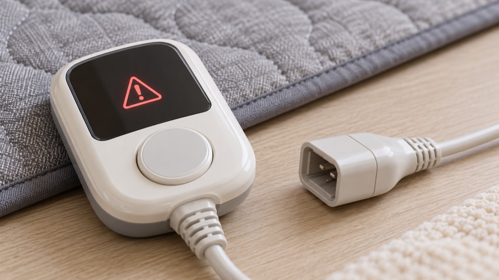

전기장판 온도조절기에 오류 표시가 뜨면 무조건 초기화부터 반복하지 말고 장판이 평평한지, 커넥터가 정확히 결합됐는지, 습기나 손상이 없는지 먼저 확인해야 합니다. 오류 코드의 의미는 모델마다 다르므로 설명서 확인이 가장 정확합니다.
커넥터 접촉 불량이나 조절기·센서 이상 가능성이 있습니다. 다른 장판 조절기를 임의로 바꾸어 연결하지 마세요. 모양이 같아도 정격과 제어 방식이 다를 수 있습니다.
접힘, 두꺼운 이불의 과도한 덮임, 열 배출 방해로 보호 기능이 작동할 수 있습니다. 완전히 식힌 뒤 평평한 상태에서 다시 확인하세요.
모델명, 오류 문자나 깜박임 횟수, 발생 시점, 장판 상태를 사진으로 남기면 상담이 빨라집니다. 관련해서 전기장판이 따뜻하지 않을 때 점검 순서도 확인해 보세요.
한국전기안전공사의 전기제품 안전수칙과 해당 모델 사용설명서를 따르세요.